;
;  ,
,  , efficiency
, efficiency Model
Superposition of the dark diode and a photocurrent source (generator convention) (Chapin et al. 1954; Shockley and Queisser 1961). Equivalent circuit adds
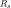
(series) and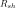
(shunt). Photocurrent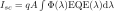
; carriers generated within a diffusion length of the junction are collected (diffusion length).Maximum power point (derivation)
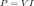
;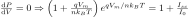
. Approximate FF for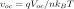
: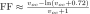
.Picture
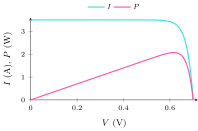
Worked example
Si cell 100 cm²,
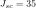
mA/cm² ( A),
A), 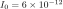
A,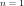
: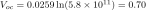
V;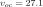
, FF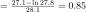
;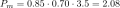
W; under 1000 W/m² (10 W on 100 cm²):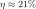
. A series resistance of 10 mΩ dissipates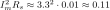
W, about 5% of the output.Picture: equivalent circuit
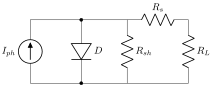
 .
.A large shunt resistance and a small series resistance keep the I–V curve square; of a few tenths of an ohm already costs several percent of fill factor in a 3 A cell.
Engineering applications
Rooftop and utility PV (MPPT trackers in inverters exploit the curve above), space power (multijunction III-V > 30%), perovskite/Si tandems, photovoltaic power converters for optical power delivery, energy harvesting for IoT.
Exam-style exercise
A 100 cm² Si cell under 1 kW/m² gives A, with
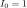
nA, ideality 1, 300 K. (a) . (b) Maximum power point, fill factor and efficiency. (c) Operating point on a 0.15 Ω load.
. (b) Maximum power point, fill factor and efficiency. (c) Operating point on a 0.15 Ω load.
Solution
(a)
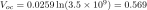
V. (b) Maximising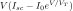
numerically: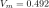
V,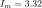
A,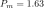
W; FF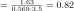
;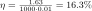
. (c) Solve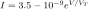
with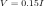
: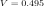
V,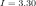
A, 1.63 W — the load is almost the optimum one (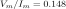
Ω).Pitfall
grows only logarithmically with light; concentration helps efficiency mainly through , while temperature reduces by ≈ −2 mV/K (≈ −0.4 %/K for Si modules).